DLSS 5 v8.8.0 for Unreal. Runs the DLSS 5 neural rendering (NR) model as an optional post pass, built on NVIDIA's DLSS 4.5 v8.8.0 Unreal plugin (NGX, Super Resolution, DLAA). It adds the Neural Rendering Lab editor panel, reusable profiles, a level settings actor, Blueprint nodes and Movie Render Queue support.
| Unreal Engine | Release | Base: NVIDIA DLSS 4.5 plugin | Engine notes |
|---|---|---|---|
| 5.5.4 | v0.1.0-ue5.5 | v8.8.0 (UE 5.5) | Base; includes the UE 5.6+ D3D12 residency path |
| 5.6.1 | v0.1.0-ue5.6 | v8.8.0 (UE 5.6) | No code changes |
| 5.7.4 | v0.1.0-ue5.7 | v8.8.0 (UE 5.7) | No code changes |
| 5.8.3 | v0.1.0-ue5.8 | v8.8.0 (UE 5.8) | Post-engine-init delegate API |
Each release was validated in the stock launcher engine: every panel control, all three routes, screen percentage, the debug views, PIE, and a Movie Render Queue render.
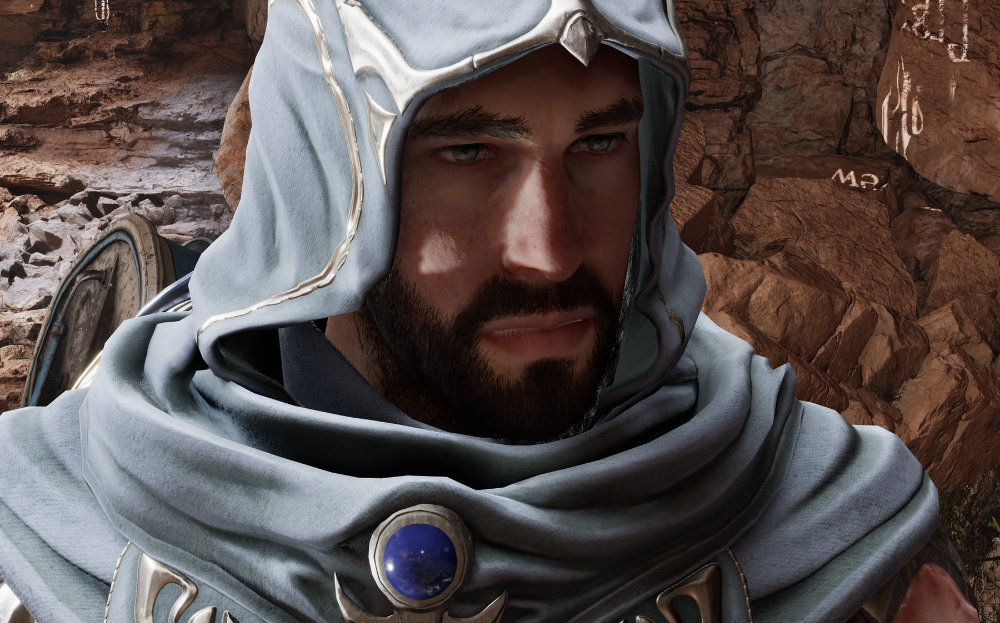
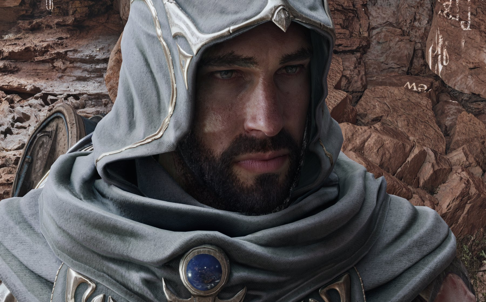
Drag the handle, or focus it and use the arrow keys. Unreal Engine 5.8.3, SpaceJunkyard, camera DLSS_Bust_Gideon_Head. Composition 1.0, style Default, skin structure AUTO.
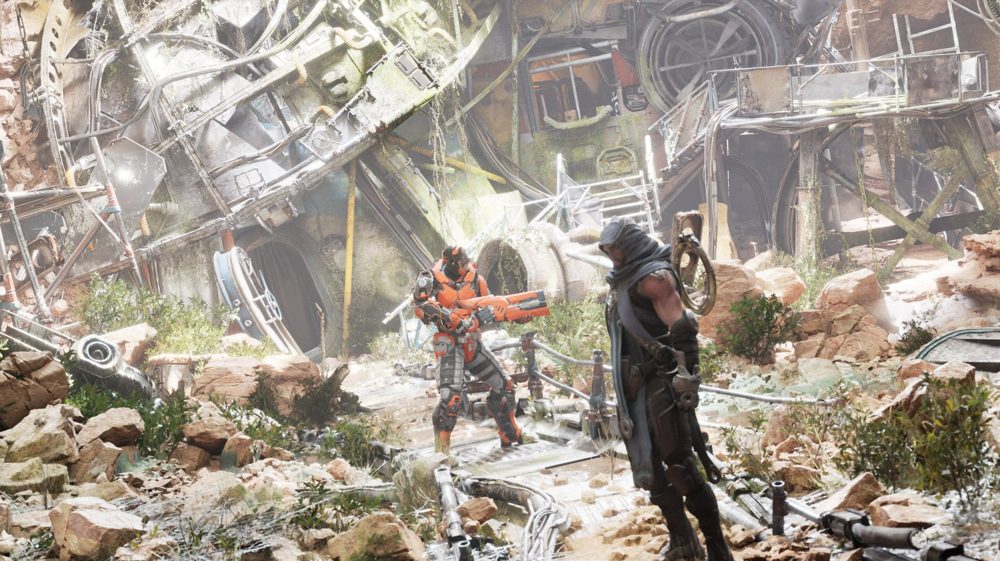
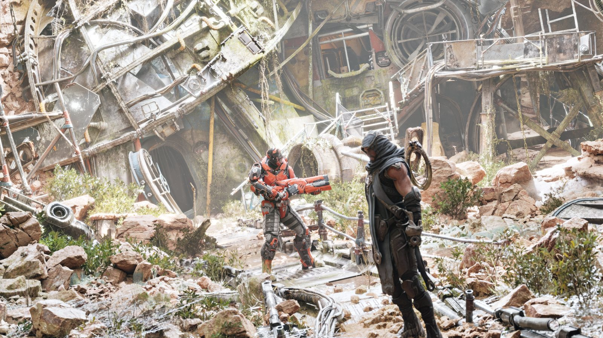
Open it from Tools → Neural Rendering Lab, or run the console command DLSSNR.Controls. The panel drives the level editor viewport and saves its working state per user.
| Control | Default | What it does |
|---|---|---|
| 1Status lines | — | Route and render scale (shows REQ / EFFECTIVE when a route overrides your value), dependency state, and output state: OFF, PENDING, ACTIVE or ROUTE UNAVAILABLE. Hover for details. |
| 2Profile | project default | Pick, clear, save or save-as a profile asset. A MODIFIED badge means unsaved edits. Switching or clearing asks before discarding edits. |
| 3Camera | — | Pilots the active viewport through a scene camera. |
| 4Screen percentage | 100 | Your requested render scale (10–200). While NR is on it is constrained by route (see Part 2); when NR is turned off, your value is restored. |
| 5NR toggle | off | Requests NR for the editor viewport. Turning it off is always possible. Every control below needs NR on, and none are available during Play in Editor. |
| 6Difference / Slice | off | Debug views, editor viewport only: amplified difference, or Original / NR / Difference slices. |
| 7Slice offset | 0 % | Moves the angled slices; available only in Slice view. |
| 8Pipeline route | Post Tone | Where NR enters the frame: Pre DLSS, Post DLAA or Post Tone. |
| 9Composition strength | 1.0 | 0 = original, 1 = full NR edit, up to 2 = exaggerated edit. |
| 10HDR composition | Additive | How the edit is merged back into HDR scene color. Pre DLSS and Post DLAA only. |
| 11HDR model white | 1.0 | Linear HDR value mapped to model white (0.25–4). Pre DLSS and Post DLAA only. |
| 12Model character | Default | Model style 0 / 1 / 2: Default, Natural, Cinematic. Takes effect on the next frame. |
| 13Neural intensity | 1.0 | Overall model influence (0–2). |
| 14Local tone | 1.0 | Low-frequency local contrast and lighting response (0–2). |
| 15Local structure | 1.0 | High-frequency detail and material reconstruction (0–2). |
| 16Skin AUTO | on | The model decides skin reconstruction. |
| 17Skin structure | 1.0 | Explicit skin strength when AUTO is off: 0 removes skin detail, 2 is maximum. Needs the subject mask. |
| 18Automatic subject mask | on | Lets the model locate skin and subjects. Required for any skin control. |
| 19Reset verified defaults | — | Resets route, composition, HDR, model parameters and debug views. |
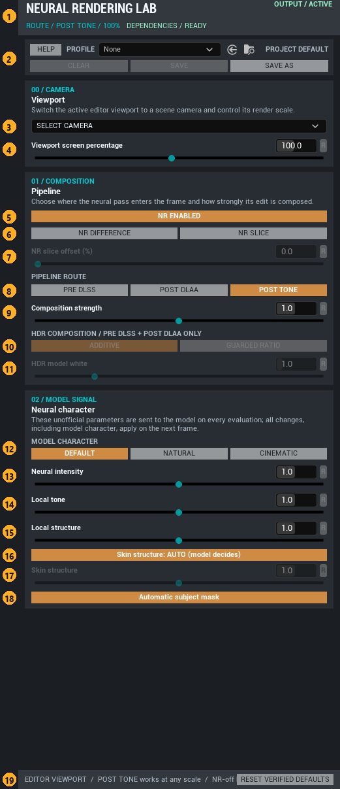
A greyed control has no effect in the current state. Its current value stays visible in dim amber, so a greyed control never hides what is set.
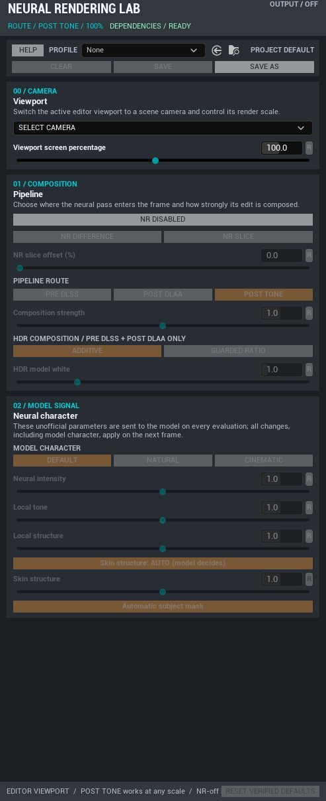
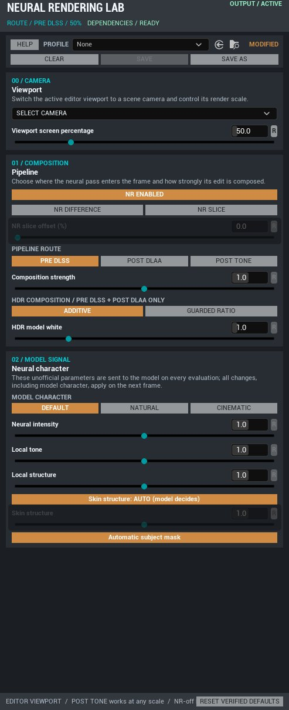
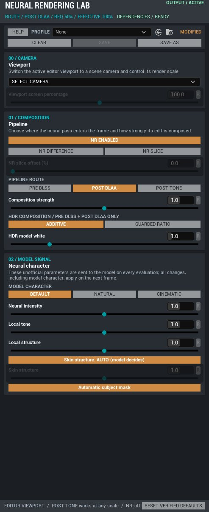
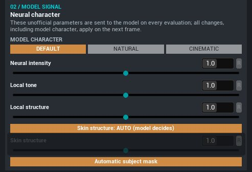
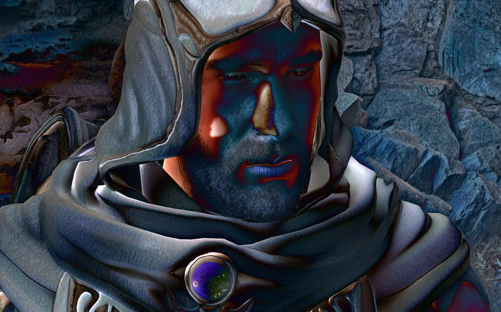
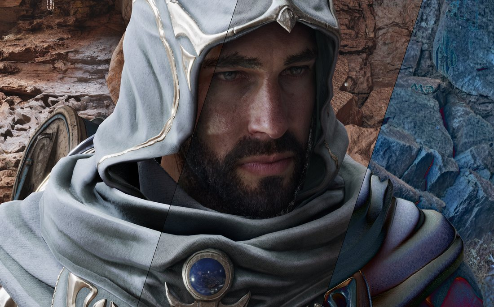
| Property | Default | What it does |
|---|---|---|
Default Profile | — | A profile asset used as the project default. When none is set, Default Settings apply. |
Enable In Game Worlds | false | Turns NR on automatically for PIE and packaged games. |
Enable In Editor Worlds | false | Turns NR on for editor worlds without the panel. |
Allow Scene Captures By Default | false | Allows NR on scene-capture views. |
Editor Preview Screen Percentage | 100 | The panel's starting render scale. |
Apply Last Editor Profile When Panel Opens | true | Restores your last panel state when the panel opens. |
| Property | Default | What it does |
|---|---|---|
Profile / Inline Settings | — | The settings to apply, from a profile or inline (turn on Use Inline Settings). |
Enable Neural Rendering | true | Enables NR for this level's world. |
Apply On World Start | true | Applies when play begins. |
Priority | 0 | The highest priority wins when several actors exist. |
| Node | What it does |
|---|---|
Apply Profile | Applies a profile to the calling world, with enable and scene-capture flags. |
Set Neural Rendering Enabled | Turns NR on or off while keeping the current settings. |
Restore Project Defaults | Reapplies the project default. |
Get Effective Settings | Returns the settings in effect for this world: source and revision. |
Add DLSS5-OneMinus Neural Rendering to a job's settings, then pick a profile and tick Enable Neural Rendering. The setting applies for the render and restores the previous state afterwards.
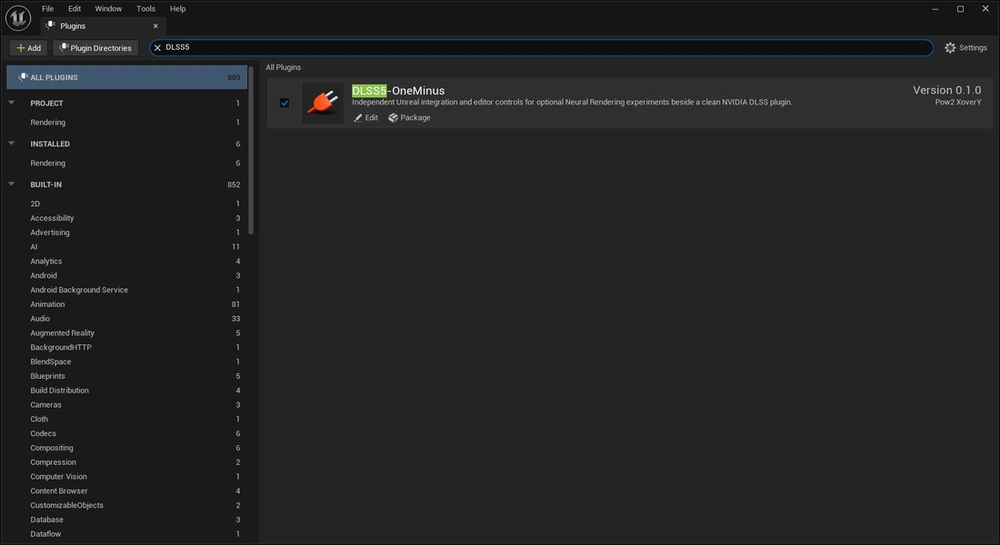
| Variable | Default | Meaning |
|---|---|---|
r.NGX.DLSSNR.Enable | 0 | Requests NR. |
r.NGX.DLSSNR.Path | 1 | Route: 0 Pre DLSS, 1 Post Tone, 2 Post DLAA. |
r.NGX.DLSSNR.Strength | 1 | Composition strength, 0–2. |
r.NGX.DLSSNR.HDRComposition · .WhitePoint | 0 · 1 | HDR composition mode and model white. |
r.NGX.DLSSNR.Style · .Intensity | 0 · 1 | Model style and intensity. |
r.NGX.DLSSNR.LocalToneStrength · .LocalStructureStrength | 1 · 1 | Local tone and structure. |
r.NGX.DLSSNR.SkinStructureStrength · .AutoMask | -1 · 1 | Skin strength (-1 = automatic) and subject mask. |
r.NGX.DLSSNR.DebugView · .SliceOffsetPercent | 0 · 0 | 0 normal, 1 difference, 2 slice; slice phase. |
r.NGX.DLSSNR.AllowSceneCaptures | 0 | Allows NR on scene captures. |
Values set from the console outrank the panel. When that happens, the profile badge reads CVAR OVERRIDE.
The route picks which image the model sees, and that decides which settings matter.
Pre DLSS and Post DLAA need DLSS to own the view. Post Tone needs SDR sRGB output and an active tonemap pass. When a route can't run, the image passes through unchanged and the panel shows ROUTE UNAVAILABLE with the reason.
Your value is never overwritten: routes only constrain what is rendered while NR is on.
The panel stores the percentage you ask for. With NR on, Pre DLSS clamps it to 33–99% and Post DLAA locks it to 100%. The header then reads REQ 50% / EFFECTIVE 100%. Turn NR off or switch to Post Tone and your 50% comes back. Values below 25% render only on Post Tone.
Settings are held per world; the most recent source to apply wins.
The editor panel controls only the editor world. PIE and game worlds start from the project default or a level actor. When something outside the panel changes the editor world, the panel updates itself to match. After PIE, the editor viewport returns to its previous NR state and scale.
On the HDR routes the model edits a display-range proxy, and its change is mapped back into linear HDR.
Additive (default, validated) adds the absolute difference. Guarded Ratio applies a per-channel gain bounded to 0.5–2×, and falls back to additive near black. HDR model white sets which linear value counts as white for the model.